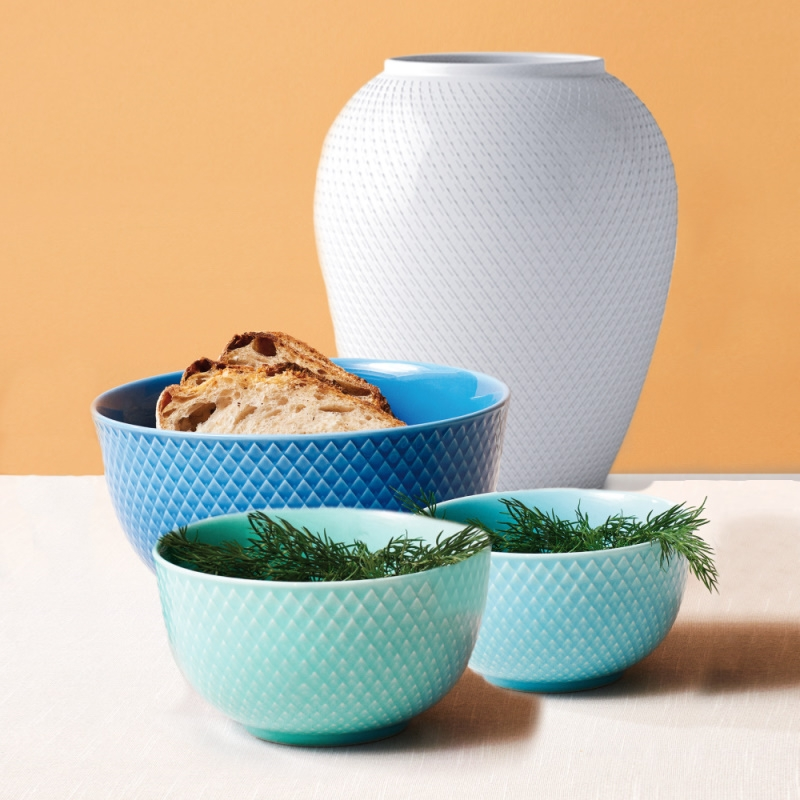
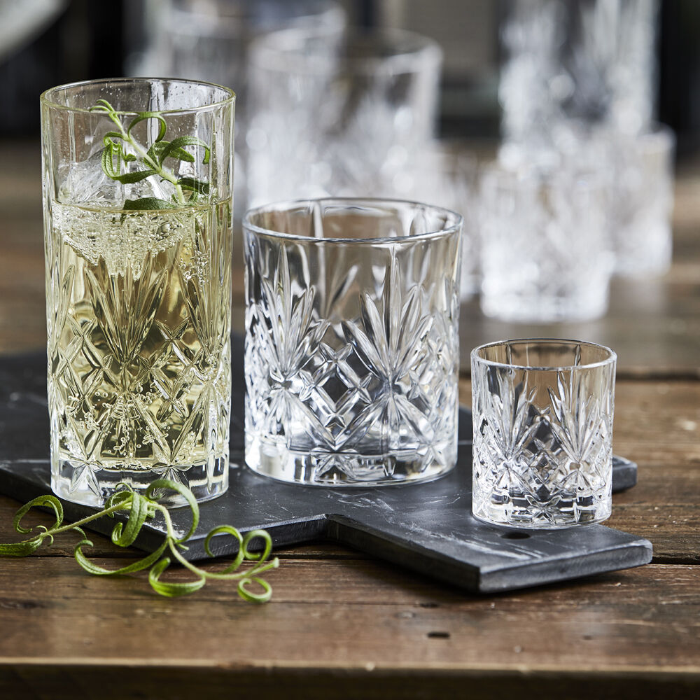

Vores produkter
1 / 3

2 / 3

3 / 3

Giv brugte ting et nyt liv, og vis det frem
Her hos Pulvis går vi meget op i glas, da det er genstande vi tit kommer i kontakt med
Det kan være alt fra almindelige glas til aftensmaden eller lidt pænere glas til en hyggelig aften
Her hos Pulvis søger vi for at vedligehold de glas vi får på lager og prøver at finde dem et nyt hjem
Porcelæn er endnu et produkt som vi ejer masser af, det er alt fra kopper. tallerkner, fad til skåle.
Vi prøver at opdele det så vidt muligt i de forskellige divise så det er nemme for jer der kommer
I butikken. Der kommer lidt mere antikke genstande her så der vil vi prøve at holde dem i god stand
og holde deres historie i live ved at finde det perfekt hjem.
Bøger er noget der fylder en masse for os her i Pulvis. Grundet vi selv går meget op i bøger og historie
Vi elsker en god fortælling og vi kan selv finde på at sprede den videre og her kommer bøgerne tit i spil
Bøger er altid noget vi vil have masser af og det giver og en stor glæde da det er noget lidt mere
Personligt for nogle mennekser. Vi håber så vi kan videredele den glæde til jer
Vi har meget forskelligt bestik og alt vores bestik har en historie at fortælle.
Det bestik vi har kan have interesse af mange, både samlere og ny udflyttede.
Bestik er noget vi aldrig løber tør for, eftersom vi ofte får hentet mere når vi rydder dødsbo.
Derfor kan man også ofte komme ned og håbe at finde noget man finder mere interessant.
Vaser er en meget subjektiv smag, af denne grund bestræber vi os på at have så stort et udvalg som muligt.
Alle vores vaser har forskellige historier og kan passe sig overalt i hjemmet, vi har både minimalistiske og pyntede vaser.
Vaser som objekt i hjemmet har eksisteret længe, derfor har vi også mulighed for at have en stor vifte af forskellige vaser.
Vaserne kan bruges både som pyntegenstand eller til blomster både inde og ude.
Lamper kan give et hjem et helt unikt udtryk, derfor kan en unik lampe også være noget særligt for et hjem.
Vi efterstræber at have lamper som kan inspirere til at dekorere sit hjem.
Vores lamper giver alle et forskelligt udtryk og kan enten være simple eller pyntede.